If you don't want to print now,
Numerical and categorical data
In a data set, a numerical variable contains a number from each individual. A categorical variable classifies each individual into one of several groups.
Frequency tables
For a categorical variable, the frequencies for the distinct categories are the number of times each category occurs in the data set. The frequencies fully capture all information about the distribution of values and are usually presented in a frequency table.
Proportions
The proportions of values in the categories (their relative frequencies) are the frequencies divided by the total number of values.
Percentages
Percentages are simply proportions multiplied by 100. It is usually easier to quickly compare a column of percentages than the corresponding column of proportions.
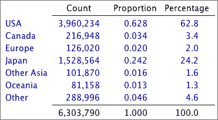
Necessary property of a frequency table
A frequency table distributes each of a collection of 'individuals' into one of several categories. Each individual must therefore contribute 1 to exactly one of the counts in the table.
Make sure that you can recognise whether a table of counts or percentages is a frequency table.
Modifying a frequency table
Sometimes a frequency table can be modified to make the information clearer or to highlight particular aspects.
Alphabetic ordering of the categories is rarely best.
Bar charts
The main graphical display of categorical data is a bar chart. In a bar chart, the height of each bar is equal to the frequency (or equivalently relative frequency) of that category.

Ordering categories
If the categories have a natural ordering (an ordinal categorical variable), this ordering should be used in a bar chart.
For nominal categorical variables (no natural ordering), alphabetic ordering of the categories should be avoided. It is better to sort them in order of decreasing frequencies, giving a Pareto diagram.
Detecting 'important' categories
Pareto diagrams are particularly useful in industrial quality control and quality improvement where information is collected about the causes of problems in manufacturing processes. The Pareto principle states that:
A large percentage of instances of any problem result from a small percentage of the possible causes.
The leftmost categories in a Pareto diagram are most important. A line is usually added showing the cumulative proportions for the different causes. For the i'th category, the height of the line gives the proportion of problems from any of the i most common categories.

Chartjunk
|
Bar charts can be very simple and need not take up much space in reports. Avoid the temptation to embellish them 'artistically' to make them more visually appealing. These additions are collectively called chartjunk. |
 |
Chartjunk adds 'noise' to a bar chart and makes it harder to read the real information that is contains. Rather than adding chartjunk, draw it small or replace it with a frequency table.
A common form of chartjunk arises when each bar is drawn as a 3-dimensional object. When the resulting 3-dimensional picture is rotated, it often becomes harder to compare the heights of bars and to read off values from the axes. In particular, perspective views should be avoided.
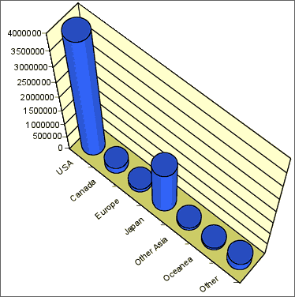
Replacing bars with objects
A more serious problem arises when the rectangular bars in a barchart are replaced with pictures of objects. This often visually mis-represents the proportions in the different categories — the visual importance of a bar is determined by its area or volume, not its height.

Other displays of categorical data
A stacked bar chart is simply a bar chart whose bars are stacked on top of each other. Stacked bar charts are often used to compare two or more groups of individuals.
A pie chart, splits a circle into segments according to the proportions in the categories. The angle for a category is given by its proportion.

In all three displays, the area of ink for any category equals the proportion of values in that category.
Bar charts and pie charts highlight different aspects of the data
Although a bar chart and a pie chart are visual representations of the same values (the proportions in the categories), they highlight different features of these proportions.
Bar charts provide better comparisons of the individual proportions, whereas pie charts allow us to assess the proportions in two or more adjacent categories. The latter is particularly useful if the categories are ordered or split into meaningful groups.

Chartjunk
Resist the temptation to 'enhance' pie charts with chartjunk. In particular, 3-dimensional pie charts can over-emphasise the categories closest to the viewer.
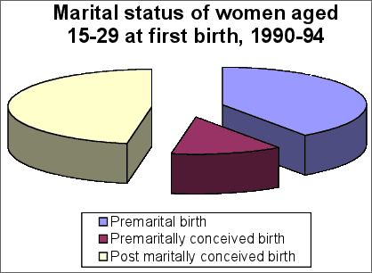
In general, it is better to draw a standard pie chart smaller rather than embellishing it with chartjunk.
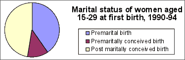
Bar charts for quantities
Bar charts are most often used to show frequencies for discrete or categorical data but they can be used to display any quantity data. (Quantity data are 'amounts' of something and are always positive. They are also called ratio variables.)

Pie charts for quantities
Pie charts can also be used to display quantity data, but there is an additional requirement that must be satisfied before a pie chart is used. The total of all the data that are displayed must itself be meaningful.
In the published pie chart below, the individual values are death rates per 100,000 live births, so their total is meaningless. A pie chart therefore should not have been used.

We are often interested in whether a categorical distribution is the same in two or more groups of individuals. The categorical data in each group can be expressed as a frequency table. Combining these frequency tables into a single rectangular array gives a contingency table.
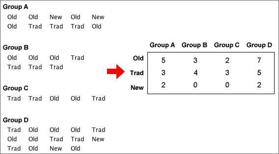
Categorical variables and groups
The raw data may be a list of values from each of several groups (as above) or the groups may be specified by a categorical variable in a single data matrix.
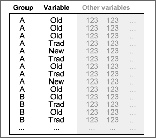
A contingency table may arise from an experiment (where one variable is controlled by the experimentor) or a survey (where there is no control over the individuals).
Example (from experiment)
To test whether vitamin C reduces the risk of catching a cold, a 1961 French study involved 279 skiers over two periods of 5-7 days. Skiers in one group of 139 were given 1 gram ascorbic acid (vitamin C) per day whereas those in the other group were given a tablet that looked similar but had no active ingredient (called a placebo). None of the skiers knew which of the treatments they had received.
| Cold | No cold | |
|---|---|---|
| Ascorbic acid | 17 | 122 |
| Placebo | 31 | 109 |
Example (from survey)
Urine drug screening was performed on 2537 applicants for career craft positions in the US Postal Service's Boston Management Sectional Center. The contingency table below shows the distribution of test results, split by gender. (Those testing positive for more than one drug were classified under the more serious of the drugs, so each individual only contributed to a single cell in the table.)
| Negative | Marijuana | Cocaine | Other drugs | |
|---|---|---|---|---|
| Frequency | 2229 | 198 | 55 | 55 |
Proportions within groups
To compare the distributions of a categorical variable in different groups, it is best to examine the proportions within the groups — the cell frequencies divided by their group totals.
In a study of racial differences in blood types, 145,057 blood specimens from the Blood Bank of Hawaii were tested.
| Blood type | |||||
|---|---|---|---|---|---|
| Ethnic group | O | A | B | AB | Total |
| Hawaiian | 01,903 | 02,490 | 00,178 | 0,099 | 4,670 |
| Hawaiian-white | 04,469 | 04,671 | 00,606 | 0,236 | 9,982 |
| Hawaiian-chinese | 02,206 | 02,368 | 00,568 | 0,243 | 5,385 |
| White | 53,759 | 50,008 | 16,252 | 5,001 | 125,020 |
From the table of within-group percentages below, it is clearer that blood groups B and AB are rarer for Hawaiians and Hawaiian-whites than for the other ethnic groups.
| Blood type | |||||
|---|---|---|---|---|---|
| Ethnic group | O | A | B | AB | Total |
| Hawaiian | 40.7 | 53.3 | 03.8 | 02.1 | 100.0 |
| Hawaiian-white | 44.8 | 46.8 | 06.1 | 02.4 | 100.0 |
| Hawaiian-chinese | 41.0 | 44.0 | 10.5 | 04.5 | 100.0 |
| White | 43.0 | 40.0 | 13.0 | 04.0 | 100.0 |
Bar charts of proportions
Bar charts can be used to graphically compare groups and it is again best to use proportions within groups rather than raw frequencies, especially if the groups are of different sizes.
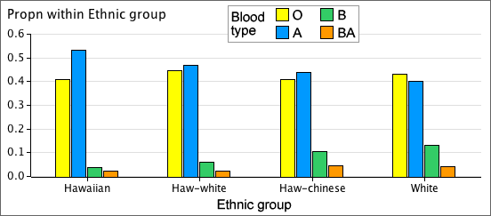
Clustering the bars
Each cluster of bars above is a valid bar chart for one group. Alternatively, the same bars can be clustered by the variable of interest:
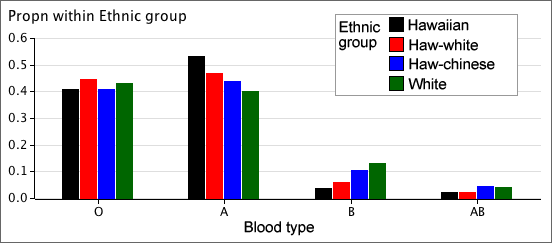
This makes it easier to make comparisons between the groups.
Stacking the bars
The bars for each group in a bar chart can be stacked to help make comparisons between the groups. Stacked bar charts are particularly effective when the categorical variable is ordinal (has categories that can be meaningfully ordered).
The diagram below is a stacked bar chart showing the results from a questionnaire in New Zealand about women's ratings of their own body size. The 246 women all had similar body-mass index and were a little lighter than average for their height.

It is clear from this bar chart that there were more Europeans in the study than in the other ethnic groups. By stacking the proportions within groups, this information is lost but it is easier to see that a bigger proportion of Europeans believe they are overweight than the other groups.
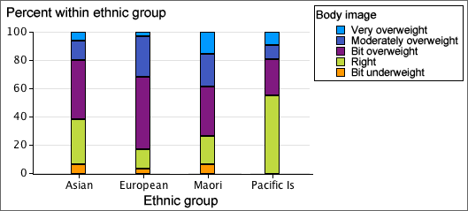
Time series
When sets of categorical measurements are recorded at successive times, time can be treated as a grouping variable.
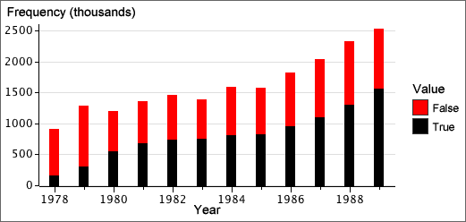
The diagram below shows the increasing percentage of True values.
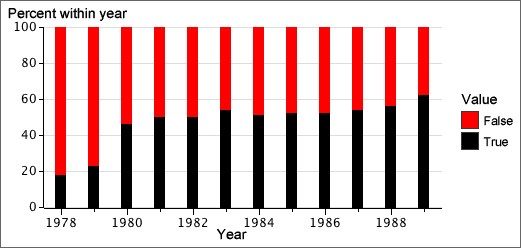
Binary variables
When the variable of interest can only take two possible values, it is called a binary variable. If the proportions in each group for one of these values are small, the bars for this category can be shown with an expanded vertical scale — no information is lost since the proportions in the other category are one minus them.
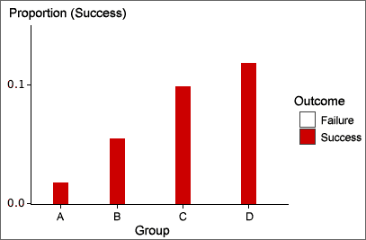
Tables from spreadsheets
Never publish tables in which all values are boxed (the default format for tables produced by many spreadsheets). Consider using a bold typeface for headings or using extra white space to separate rows and columns as an alternative to lines.
| Reason | No. | % |
| Needle/Surg. Injuries | 279 | 0.2 |
| Rape | 1502 | 0.8 |
| TB | 1564 | 0.9 |
| STI | 2745 | 1.5 |
| Med Exam | 4717 | 2.6 |
| Clinical Suspicion | 15387 | 8.5 |
| PMTCT | 45590 | 25.0 |
| VCT | 102443 | 56.3 |
| Other | 7825 | 4.3 |
The table below presents the data more effectively.
| Reason | No. | % |
| Needle/Surg. Injuries | 279 | .2 |
| Rape | 1,502 | .8 |
| TB | 1,564 | .9 |
| STI | 2,745 | 1.5 |
| Med Exam | 4,717 | 2.6 |
| Clinical Suspicion | 15,387 | 8.5 |
| PMTCT (pregnancy) | 45,590 | 25.0 |
| VCT (voluntary) | 102,443 | 56.3 |
| Other | 7,825 | 4.3 |
Large tables
In large tables, it can be difficult to read across rows. To help the eye to match values on the same line, hairlines can be drawn between occasional rows, or some rows can be printed on a very light grey background.
Layout
Think carefully about how to arrange the rows and columns. Values that we want to compare should be close to each other, ideally in a column. Judicious use of white space can help to show the structure of complex tables.
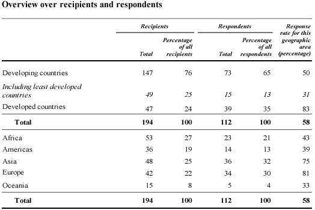
The layout above has little structure. The table below contains the same information but is easier to understand.
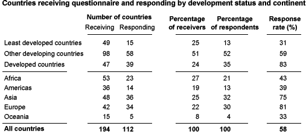
Annotation
When a table is included in a report, the main information that can be gained from the table should also be summarised in the body of the report in words.
Do not simply repeat the values in the table. The annotation should summarise and interpret.
Signal and noise
The useful information in a graphical or tabular display of data is called its signal. Parts of the display that do not contain information that can be usefully interpreted are called noise. We can distinguish:
Noise make it harder to detect the signal in a display and should be avoided.
Significant digits
Many tables contain values that are reported with more significant digits than necessary. Usually the pattern of values in a table can be understood from only their first 2 or 3 digits — the remaining digits are data noise.
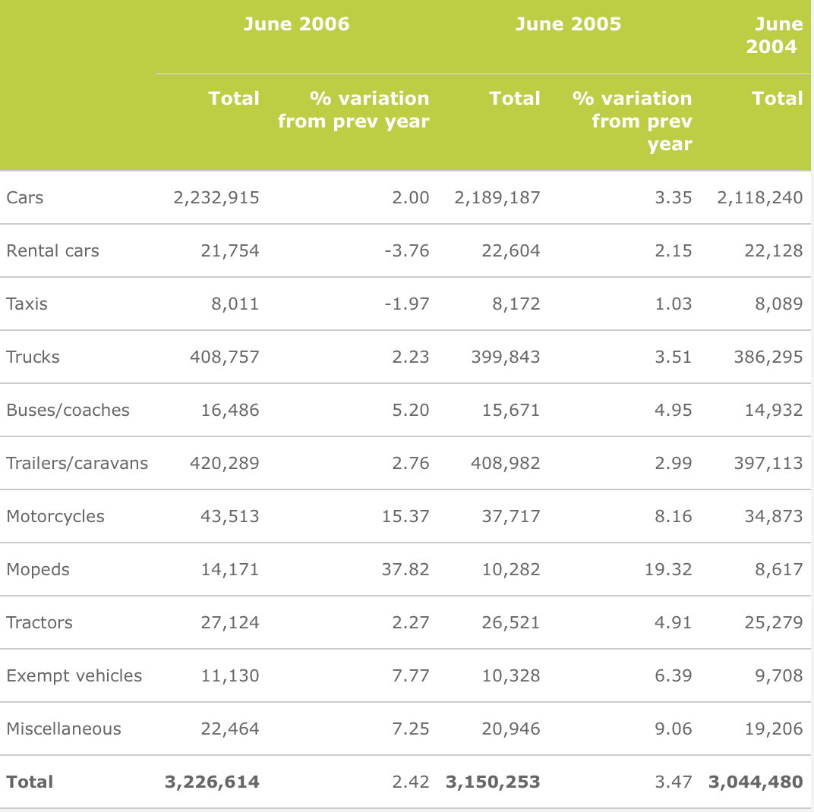
Reducing the number of significant digits and rearranging the columns makes the information easier to understand.
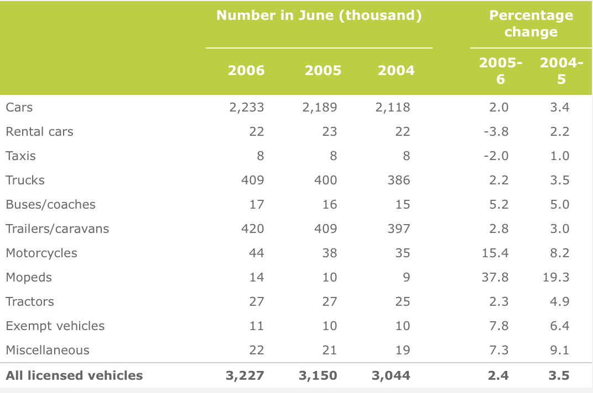
Percentages and proportions
It is often easier to understand proportions (or percentages) than raw counts. This is particularly important for comparing groups of individuals. The table below shows the origin and 'lifestage' of tourists (in thousands) arriving in Hawaii in 2005.
| US West | US East | Japan | Canada | Europe | |
| Wedding/honeymoon | 103.1 | 110.0 | 192.7 | 8.0 | 131.5 |
| Family (with children) | 667.1 | 297.1 | 485.6 | 44.5 | 94.4 |
| Young (18-34) | 403.3 | 243.1 | 229.1 | 38.8 | 210.1 |
| Middle aged (35-54) | 955.2 | 634.7 | 308.0 | 75.1 | 374.2 |
| Seniors (55+) | 903.7 | 643.5 | 303.5 | 82.3 | 314.6 |
| Total | 3,032.5 | 1,929.3 | 1,517.4 | 248.6 | 1,123.7 |
The information is easier to understand as percentages within each country of origin. Scanning across rows in the table below, the highlighted percentages stand out as 'unusual'.
| US West | US East | Japan | Canada | Europe | |
| Wedding/honeymoon | 3.4 | 5.7 | 12.7 | 3.2 | 11.7 |
| Family (with children) | 22.0 | 15.4 | 32.0 | 17.9 | 8.4 |
| Young (18-34) | 13.3 | 12.6 | 15.1 | 15.6 | 18.7 |
| Middle aged (35-54) | 31.5 | 32.9 | 20.3 | 30.2 | 33.3 |
| Seniors (55+) | 29.8 | 33.3 | 20.0 | 33.1 | 28.0 |
| Total | 100.0 | 100.0 | 100.0 | 100.0 | 100.0 |
Ratios
It is sometimes better to divide values by some measure of 'size' before analysis or display.
Comparing values down columns
It is easiest to compare values if they are close together in a table. The layout and use of white space should be used to encourage comparison of related values.
In particular, it is easier to compare values down columns than across rows — their most significant digits are closer — so carefully consider whether to swap the rows and columns of a table.
Order for the rows of a table
In many tables, the rows are ordered alphabetically by their row names, but it is usually better to reorder them in another meaningful way.
If there is no better ordering, sort the rows into decreasing order of the values in the column of most interest.
Tourist arrivals in South Africa
The following table was published as part of a report on tourism in South Africa. It describes the origin of tourist arrivals in 2004 and the amounts that they spent in South Africa (excluding capital expenditure).
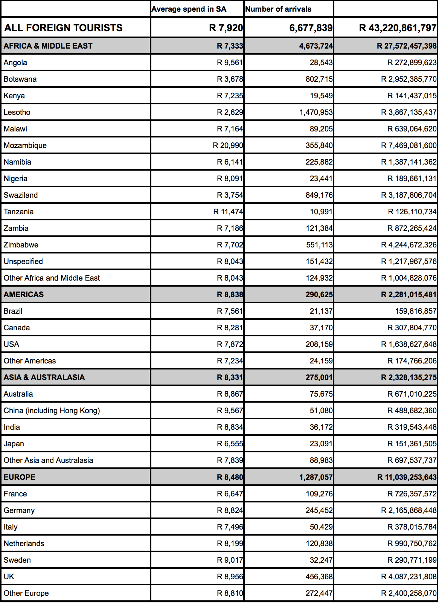
This table can be improved by removing grid lines, decreasing the number of significant digits, and reordering the countries within each region.
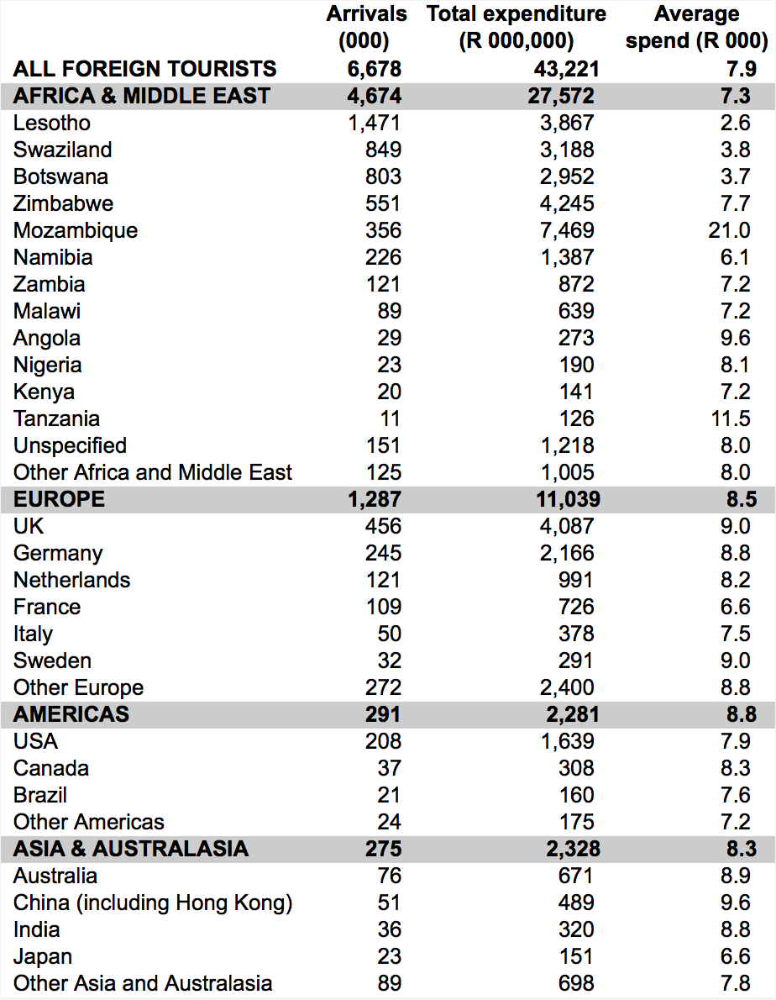